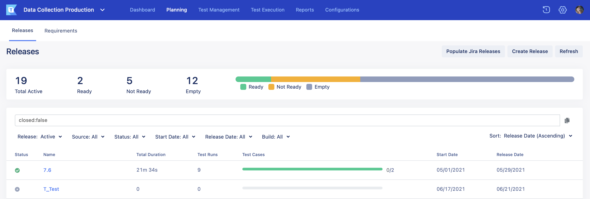
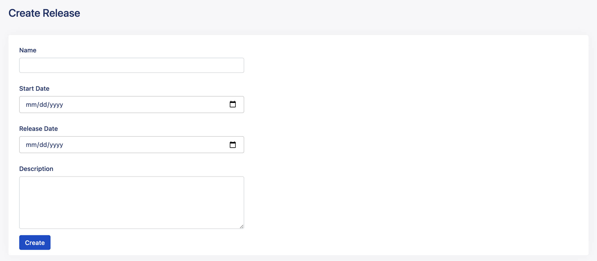

Create a new release in TestOps
- Sign in to Katalon TestOps and go to your project.The project Dashboard page appears.
- Go to Planning > Releases.The Releases page appears as below.

- Click on the Create Release button at the top right corner.The Create Release page appears as below.

- Fill in the required information:
- Name: your Release version (e.g., Release 8.0.0).
- Start Date: when you want to start your Release.
- Release Date: when you want to end your Release.
- Click Create.